Groundcover
What the plant does, from the tags the catalogue records against it.
173 plants
 Denali National Park and Preserve, some rights reserved (CC BY)") Alaska HarebellCampanula lasiocarpa
Alaska HarebellCampanula lasiocarpa Alberta PenstemonPenstemon albertinusAlkali Cord GrassSpartina gracilis
Alberta PenstemonPenstemon albertinusAlkali Cord GrassSpartina gracilis Thomas Koffel, some rights reserved (CC BY), uploaded by Thomas Koffel") Alpine AsterAster alpinus
Alpine AsterAster alpinus Alastair Rae, some rights reserved (CC BY-SA)") Alpine BistortBistorta vivipara
Alpine BistortBistorta vivipara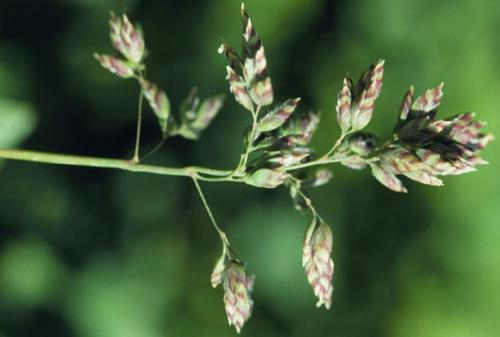
Alpine BluegrassPoa alpina Caleb Catto, some rights reserved (CC BY), uploaded by Caleb Catto") Alpine Forget-me-notMyosotis asiatica
Alpine Forget-me-notMyosotis asiatica Drepanostoma, nekatere pravice pridžane (CC BY), naložena od Drepanostoma") Alpine Rock JasmineAndrosace chamaejasme
Alpine Rock JasmineAndrosace chamaejasme Alex Abair, some rights reserved (CC BY), uploaded by Alex Abair") American BrooklimeVeronica americanaArctic AsterEurybia sibirica
American BrooklimeVeronica americanaArctic AsterEurybia sibirica Ascending MilkvetchAstragalus laxmannii
Ascending MilkvetchAstragalus laxmannii Awned SedgeCarex atherodes
Awned SedgeCarex atherodes Ball CactusEscobaria viviparaBastard ToadflaxComandra umbellata
Ball CactusEscobaria viviparaBastard ToadflaxComandra umbellata Sigitas Juzėnas, some rights reserved (CC BY), uploaded by Sigitas Juzėnas") Beaked SedgeCarex rostrata
Beaked SedgeCarex rostrata Douglas Goldman, some rights reserved (CC BY-SA), uploaded by Douglas Goldman") BearberryArctostaphylos uva-ursiBebb's SedgeCarex bebbiiBig BluestemAndropogon gerardii
BearberryArctostaphylos uva-ursiBebb's SedgeCarex bebbiiBig BluestemAndropogon gerardii Owen Strickland, some rights reserved (CC BY), uploaded by Owen Strickland") Big-head RushJuncus vaseyi
Big-head RushJuncus vaseyi Eugene Popov, some rights reserved (CC BY), uploaded by Eugene Popov") Birch-leaved SpireaSpiraea betulifolia
Birch-leaved SpireaSpiraea betulifolia aarongunnar, some rights reserved (CC BY), uploaded by aarongunnar") Bishop's CapMitella nuda
Bishop's CapMitella nuda Matt Berger, some rights reserved (CC BY), uploaded by Matt Berger") Blue Grama GrassBouteloua gracilis
Blue Grama GrassBouteloua gracilis Matt Lavin, some rights reserved (CC BY-SA)") Bluebunch FescueFestuca idahoensis
Bluebunch FescueFestuca idahoensis Matt Lavin, some rights reserved (CC BY)") Bluejoint Reed GrassCalamagrostis canadensis
Bluejoint Reed GrassCalamagrostis canadensis Bog CranberryVaccinium oxycoccos
Bog CranberryVaccinium oxycoccos Boreal YarrowAchillea borealisBunchberryCornus canadensis
Boreal YarrowAchillea borealisBunchberryCornus canadensis Dendroica cerulea, some rights reserved (CC BY)") Canada AnemoneAnemonastrum canadenseCanada Rice GrassPiptatherum canadense
Canada AnemoneAnemonastrum canadenseCanada Rice GrassPiptatherum canadense davecz2, some rights reserved (CC BY-SA), uploaded by davecz2") Common AlumrootHeuchera richardsonii
Common AlumrootHeuchera richardsonii Matt Lavin, some rights reserved (CC BY)") Common TwinpodPhysaria didymocarpa
Common TwinpodPhysaria didymocarpa Superior National Forest, some rights reserved (CC BY)") Cream-Coloured PeavineLathyrus ochroleucus
Cream-Coloured PeavineLathyrus ochroleucus Creeping JuniperJuniperus horizontalisCreeping Oregon GrapeMahonia repens
Creeping JuniperJuniperus horizontalisCreeping Oregon GrapeMahonia repens Denali National Park and Preserve, some rights reserved (CC BY)") Creeping SibbaldiaSibbaldia procumbens
Creeping SibbaldiaSibbaldia procumbens Matt Lavin, some rights reserved (CC BY)") Creeping SpikerushEleocharis palustris
Creeping SpikerushEleocharis palustris Joshua Mayer, some rights reserved (CC BY-SA)") Crowfoot VioletViola pedatifida
Crowfoot VioletViola pedatifida Caleb Catto, some rights reserved (CC BY), uploaded by Caleb Catto") Cushion Umbrella PlantEriogonum androsaceumCut-leaved AnemoneAnemone multifida
Cushion Umbrella PlantEriogonum androsaceumCut-leaved AnemoneAnemone multifida aarongunnar, some rights reserved (CC BY), uploaded by aarongunnar") DewberryRubus pubescens
DewberryRubus pubescens Matt Lavin, some rights reserved (CC BY-SA)") Drummond's RushJuncus drummondii
Drummond's RushJuncus drummondii abogomazova, some rights reserved (CC BY), uploaded by abogomazova") Dwarf RaspberryRubus arcticus
Dwarf RaspberryRubus arcticus Early Blue VioletViola adunca
Early Blue VioletViola adunca Peter Stevens, some rights reserved (CC BY)") False Box (Mountain Boxwood)Paxistima myrsinites
False Box (Mountain Boxwood)Paxistima myrsinites Don Loarie, some rights reserved (CC BY), uploaded by Don Loarie") False Solomon's SealMaianthemum racemosum
False Solomon's SealMaianthemum racemosum Alex Abair, some rights reserved (CC BY), uploaded by Alex Abair") Field ChickweedCerastium arvense
Field ChickweedCerastium arvense Alexis Williams, some rights reserved (CC BY), uploaded by Alexis Williams") Field PussytoesAntennaria neglecta
Field PussytoesAntennaria neglecta Matt Berger, some rights reserved (CC BY), uploaded by Matt Berger") Foothills Rough FescueFestuca campestris
Foothills Rough FescueFestuca campestris Matt Lavin, some rights reserved (CC BY-SA)") Fringed BromeBromus ciliatus
Fringed BromeBromus ciliatus er-birds, some rights reserved (CC BY), uploaded by er-birds") Fringed LoosestrifeLysimachia ciliata
Fringed LoosestrifeLysimachia ciliata crothfels, some rights reserved (CC BY)") Golden DrabaDraba aurea
Golden DrabaDraba aurea Matt Berger, some rights reserved (CC BY), uploaded by Matt Berger") Golden SedgeCarex aurea
Golden SedgeCarex aurea Matt Lavin, some rights reserved (CC BY)") Green Needle GrassNassella viridula
Green Needle GrassNassella viridula Matt Lavin, some rights reserved (CC BY-SA)") Ground PlumAstragalus crassicarpus
Ground PlumAstragalus crassicarpus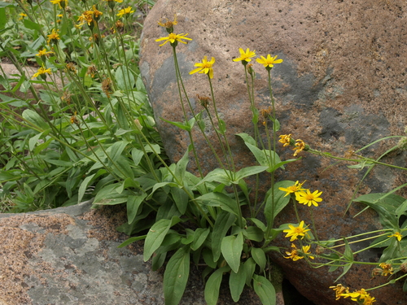
Hairy ArnicaArnica mollis Matt Lavin, some rights reserved (CC BY-SA)") Hairy Golden AsterHeterotheca villosa
Hairy Golden AsterHeterotheca villosa Hairy Wild RyeLeymus innovatusHarebellCampanula alaskanaHeart-leaved ArnicaArnica cordifolia
Hairy Wild RyeLeymus innovatusHarebellCampanula alaskanaHeart-leaved ArnicaArnica cordifolia Matt Lavin, some rights reserved (CC BY)") Hoary AsterDieteria canescensHooker's Oat GrassAvenula hookeri
Hoary AsterDieteria canescensHooker's Oat GrassAvenula hookeri Indigenous RicegrassEriocoma hymenoides
Indigenous RicegrassEriocoma hymenoides Douglas Goldman, some rights reserved (CC BY-SA), uploaded by Douglas Goldman") June GrassKoeleria macranthaKnotted RushJuncus nodosusLabrador TeaLedum groenlandicum
June GrassKoeleria macranthaKnotted RushJuncus nodosusLabrador TeaLedum groenlandicum Steve Matson, some rights reserved (CC BY), uploaded by Steve Matson") Lance-leaved StonecropSedum lanceolatum
Lance-leaved StonecropSedum lanceolatum Thomas Gyselinck, some rights reserved (CC BY), uploaded by Thomas Gyselinck") Large-leaved AvensGeum macrophyllumLate Yellow OxytropisOxytropis monticola
Large-leaved AvensGeum macrophyllumLate Yellow OxytropisOxytropis monticola Andrey Zharkikh, some rights reserved (CC BY)") Leafy AsterSymphyotrichum foliaceum
Leafy AsterSymphyotrichum foliaceum Lindley's AsterSymphyotrichum ciliolatum
Lindley's AsterSymphyotrichum ciliolatum Colin Meurk, some rights reserved (CC BY-SA), uploaded by Colin Meurk") Little BluestemSchizachyrium scoparium
Little BluestemSchizachyrium scoparium Steve Matson, some rights reserved (CC BY), uploaded by Steve Matson") Little-leaved AlumrootHeuchera parvifolia
Little-leaved AlumrootHeuchera parvifolia Dustin Snider, some rights reserved (CC BY), uploaded by Dustin Snider") Long-fruited AnemoneAnemone cylindrica
Long-fruited AnemoneAnemone cylindrica
Benjamin Zwittnig, some rights reserved (CC BY)") Low BilberryVaccinium myrtillus
Low BilberryVaccinium myrtillus Michael Tidwell, some rights reserved (CC BY), uploaded by Michael Tidwell") Low TownsendiaTownsendia exscapaMany-flowered Aster (Tufted White Prairie Aster)Symphyotrichum ericoidesMarsh VioletViola palustris
Low TownsendiaTownsendia exscapaMany-flowered Aster (Tufted White Prairie Aster)Symphyotrichum ericoidesMarsh VioletViola palustris Jason Grant, some rights reserved (CC BY), uploaded by Jason Grant") Meadow SedgeCarex praticola
Meadow SedgeCarex praticola Matt Lavin, some rights reserved (CC BY-SA)") Missouri MilkvetchAstragalus missouriensis
Missouri MilkvetchAstragalus missouriensis Katrin Simon, some rights reserved (CC BY), uploaded by Katrin Simon") Moss CampionSilene acaulisMoss PhloxPhlox hoodii
Moss CampionSilene acaulisMoss PhloxPhlox hoodii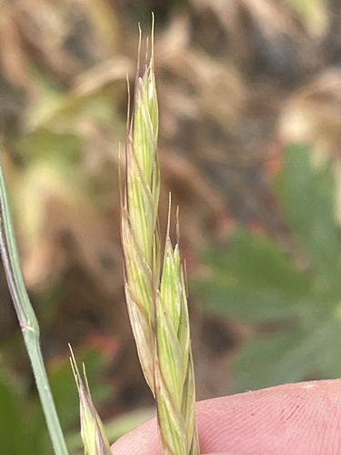
Mountain BromeBromus marginatus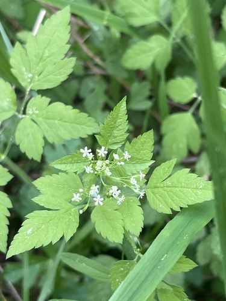
Mountain Sweet CicelyOsmorhiza berteroiNarrow-leaved HawkweedHieracium umbellatum Trevor Van Loon, some rights reserved (CC BY), uploaded by Trevor Van Loon") Needle and Thread GrassHesperostipa comataNeedle Spike-rushEleocharis acicularis
Needle and Thread GrassHesperostipa comataNeedle Spike-rushEleocharis acicularis Bob Miller, some rights reserved (CC BY), uploaded by Bob Miller") Northern Wheat GrassElymus lanceolatus
Northern Wheat GrassElymus lanceolatus Tom Norton, some rights reserved (CC BY), uploaded by Tom Norton") Ostrich FernMatteuccia struthiopteris
Ostrich FernMatteuccia struthiopteris Mary Krieger, some rights reserved (CC BY), uploaded by Mary Krieger") Palmate-leaved ColtsfootPetasites frigidus
Palmate-leaved ColtsfootPetasites frigidus Matt Berger, some rights reserved (CC BY), uploaded by Matt Berger") Parry's OatgrassDanthonia parryiParry's TownsendiaTownsendia parryi
Parry's OatgrassDanthonia parryiParry's TownsendiaTownsendia parryi Matt Berger, some rights reserved (CC BY), uploaded by Matt Berger") Pink PussytoesAntennaria rosea
Pink PussytoesAntennaria rosea Pink PyrolaPyrola asarifolia
Pink PyrolaPyrola asarifolia Matt Berger, some rights reserved (CC BY), uploaded by Matt Berger") Plains MuhlyMuhlenbergia cuspidata
Plains MuhlyMuhlenbergia cuspidata Andrey Zharkikh, some rights reserved (CC BY)") Plains Prickly Pear CactusOpuntia polyacantha
Plains Prickly Pear CactusOpuntia polyacantha USFWS Mountain-Prairie, some rights reserved (CC BY)") Porcupine GrassHesperostipa spartea
Porcupine GrassHesperostipa spartea naturalist charlie, some rights reserved (CC BY), uploaded by naturalist charlie") Poverty Oat GrassDanthonia spicata
Poverty Oat GrassDanthonia spicata Matt Lavin, some rights reserved (CC BY-SA)") Prairie CinquefoilPotentilla pensylvanicaPrairie Cord GrassSpartina pectinata
Prairie CinquefoilPotentilla pensylvanicaPrairie Cord GrassSpartina pectinata Douglas Goldman, some rights reserved (CC BY-SA), uploaded by Douglas Goldman") Prairie DropseedSporobolus heterolepis
Prairie DropseedSporobolus heterolepis Joshua Mayer, some rights reserved (CC BY-SA)") Prairie RoseRosa arkansana
Prairie RoseRosa arkansana Prairie Wedge GrassSphenopholis obtusataPurple Oat GrassSchizachne purpurascensPurple Reed GrassCalamagrostis purpurascensRaymond's SedgeCarex raymondiiRichardson's NeedlegrassEriocoma richardsonii
Prairie Wedge GrassSphenopholis obtusataPurple Oat GrassSchizachne purpurascensPurple Reed GrassCalamagrostis purpurascensRaymond's SedgeCarex raymondiiRichardson's NeedlegrassEriocoma richardsonii Jim Morefield, some rights reserved (CC BY)") Rocky Mountain FescueFestuca saximontana
Rocky Mountain FescueFestuca saximontana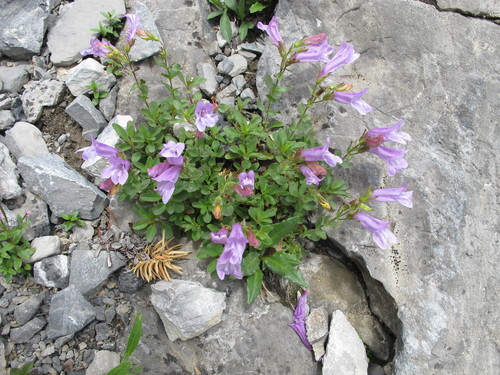
Rocky-Ledge BeardtonguePenstemon ellipticus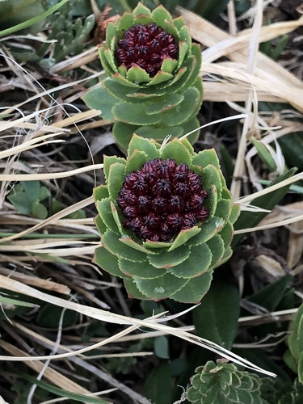
RoserootRhodiola integrifolia Rosy Pussytoes (Littleleaf Pussytoes)Antennaria microphylla
Rosy Pussytoes (Littleleaf Pussytoes)Antennaria microphylla Darrin Gobble, some rights reserved (CC BY), uploaded by Darrin Gobble") Rough-fruited Fairy BellsProsartes trachycarpaRound-leaved AlumrootHeuchera cylindricaRound-leaved Yellow VioletViola orbiculata
Rough-fruited Fairy BellsProsartes trachycarpaRound-leaved AlumrootHeuchera cylindricaRound-leaved Yellow VioletViola orbiculata Roberto Daniel Avila, some rights reserved (CC BY), uploaded by Roberto Daniel Avila") SaltgrassDistichlis spicataSand GrassCalamovilfa longifolia
SaltgrassDistichlis spicataSand GrassCalamovilfa longifolia Sandberg BluegrassPoa secundaSartwell's SedgeCarex sartwellii
Sandberg BluegrassPoa secundaSartwell's SedgeCarex sartwellii Stan Shebs, some rights reserved (CC BY-SA)") Scarlet Butterfly PlantOenothera suffrutescensScarlet GlobemallowSphaeralcea coccinea
Scarlet Butterfly PlantOenothera suffrutescensScarlet GlobemallowSphaeralcea coccinea Douglas Goldman, some rights reserved (CC BY-SA), uploaded by Douglas Goldman") Self-healPrunella vulgaris
Self-healPrunella vulgaris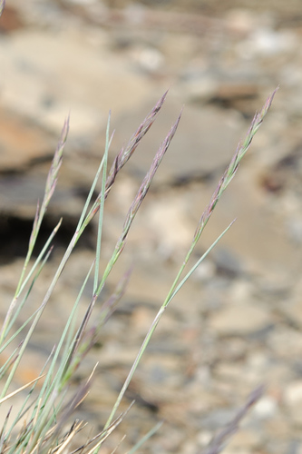
Sheep FescueFestuca ovina JerryFriedman, some rights reserved (CC BY-SA)") Showy Jacob's-ladderPolemonium pulcherrimum
Showy Jacob's-ladderPolemonium pulcherrimum Matt Berger, some rights reserved (CC BY), uploaded by Matt Berger") Showy PussytoesAntennaria pulcherrima
Showy PussytoesAntennaria pulcherrima psweet, some rights reserved (CC BY-SA), uploaded by psweet") Sideoats GramaBouteloua curtipendulaSilverweedPotentilla anserinaSkunk CurrantRibes glandulosum
Sideoats GramaBouteloua curtipendulaSilverweedPotentilla anserinaSkunk CurrantRibes glandulosum Jason Alexander, some rights reserved (CC BY), uploaded by Jason Alexander") Slender Blue BeardtonguePenstemon procerus
Slender Blue BeardtonguePenstemon procerus Slender Cinquefoil (Graceful Cinquefoil)Potentilla gracilis
Slender Cinquefoil (Graceful Cinquefoil)Potentilla gracilis Nolan Exe, some rights reserved (CC BY), uploaded by Nolan Exe") Slough GrassBeckmannia syzigachne
Slough GrassBeckmannia syzigachne Matt Lavin, some rights reserved (CC BY-SA)") Small-fruited BulrushScirpus microcarpusSmall-leaved Everlasting (Small-leaved Pussytoes)Antennaria parvifolia
Small-fruited BulrushScirpus microcarpusSmall-leaved Everlasting (Small-leaved Pussytoes)Antennaria parvifolia Matt Lavin, some rights reserved (CC BY-SA)") Smooth Wild RyeElymus glaucusSpear-leaved ArnicaArnica lonchophylla
Smooth Wild RyeElymus glaucusSpear-leaved ArnicaArnica lonchophylla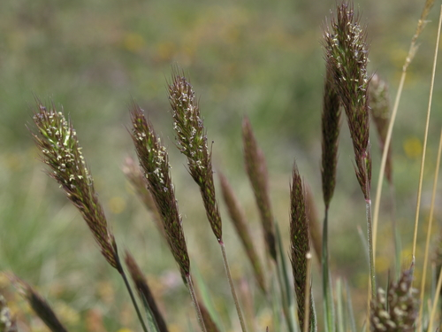
Spike TrisetumKoeleria spicata Matt Lavin, some rights reserved (CC BY-SA)") Sprengel's SedgeCarex sprengelii
Sprengel's SedgeCarex sprengelii Tom Norton, some rights reserved (CC BY), uploaded by Tom Norton") Star-flowered Solomon's SealMaianthemum stellatum
Star-flowered Solomon's SealMaianthemum stellatum Sweet-scented BedstrawGalium triflorum
Sweet-scented BedstrawGalium triflorum aarongunnar, some rights reserved (CC BY), uploaded by aarongunnar") SweetgrassAnthoxanthum hirtum
SweetgrassAnthoxanthum hirtum Eric Lamb, some rights reserved (CC BY), uploaded by Eric Lamb") Tall Showy YarrowAchillea alpina
Tall Showy YarrowAchillea alpina Matt Lavin, some rights reserved (CC BY-SA)") Three Flowered Avens (Prairie Smoke, Old Man's Whiskers)Geum triflorum
Three Flowered Avens (Prairie Smoke, Old Man's Whiskers)Geum triflorum Michael J. Papay, some rights reserved (CC BY), uploaded by Michael J. Papay") TicklegrassAgrostis scabra
TicklegrassAgrostis scabra aarongunnar, some rights reserved (CC BY), uploaded by aarongunnar") Torrey's RushJuncus torreyiTrailing RaspberryRubus pedatusTufted FleabaneErigeron caespitosusTufted HairgrassDeschampsia caespitosa
Torrey's RushJuncus torreyiTrailing RaspberryRubus pedatusTufted FleabaneErigeron caespitosusTufted HairgrassDeschampsia caespitosa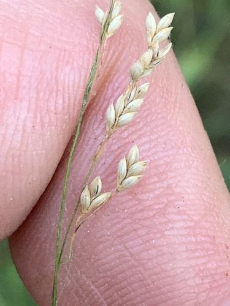
Tufted Tall Manna GrassGlyceria elata Matt Lavin, some rights reserved (CC BY-SA)") Twin ArnicaArnica sororia
Twin ArnicaArnica sororia Chris Johnson, some rights reserved (CC BY), uploaded by Chris Johnson") TwinflowerLinnaea borealisUmbrella BuckwheatEriogonum umbellatum
TwinflowerLinnaea borealisUmbrella BuckwheatEriogonum umbellatum Юлия, some rights reserved (CC BY), uploaded by Юлия") Variegated HorsetailEquisetum variegatum
Variegated HorsetailEquisetum variegatum Mary Krieger, some rights reserved (CC BY), uploaded by Mary Krieger") Veiny Meadow-RueThalictrum venulosum
Veiny Meadow-RueThalictrum venulosum mark-groeneveld, some rights reserved (CC BY), uploaded by mark-groeneveld") Water SedgeCarex aquatilis
Water SedgeCarex aquatilis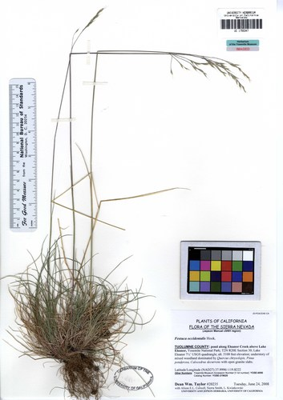
Western FescueFestuca occidentalis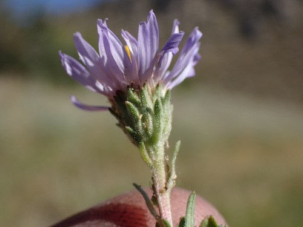
Western Meadow AsterSymphyotrichum campestreWestern Porcupine GrassHesperostipa curtiseta Mary Krieger, some rights reserved (CC BY), uploaded by Mary Krieger") Western SnowberrySymphoricarpos occidentalisWestern WheatgrassPascopyrum smithii
Western SnowberrySymphoricarpos occidentalisWestern WheatgrassPascopyrum smithii White GeraniumGeranium richardsonii
White GeraniumGeranium richardsonii Logan J.L. Bradley, some rights reserved (CC BY), uploaded by Logan J.L. Bradley") White Mountain AvensDryas hookerianaWhite-grained Mountain Rice GrassOryzopsis asperifolia
White Mountain AvensDryas hookerianaWhite-grained Mountain Rice GrassOryzopsis asperifolia Wild Lily-of-the-valleyMaianthemum canadense
Wild Lily-of-the-valleyMaianthemum canadense Abby Hyde, some rights reserved (CC BY), uploaded by Abby Hyde") Wild StrawberryFragaria virginiana
Wild StrawberryFragaria virginiana aarongunnar, some rights reserved (CC BY), uploaded by aarongunnar") Wire RushJuncus balticus
Wire RushJuncus balticus Douglas Goldman, some rights reserved (CC BY-SA), uploaded by Douglas Goldman") Woodland StrawberryFragaria vesca
Woodland StrawberryFragaria vesca Woolly CinquefoilPotentilla hippianaWoolly GroundselPackera cana
Woolly CinquefoilPotentilla hippianaWoolly GroundselPackera cana aarongunnar, some rights reserved (CC BY), uploaded by aarongunnar") Woolly SedgeCarex pellita
Woolly SedgeCarex pellita Joshua Mayer, some rights reserved (CC BY-SA)") Yellow AvensGeum aleppicum
Yellow AvensGeum aleppicum J Brew, some rights reserved (CC BY-SA), uploaded by J Brew") Yellow BeardtonguePenstemon confertus
Yellow BeardtonguePenstemon confertus Yellow BuckwheatEriogonum flavum
Yellow BuckwheatEriogonum flavum Matt Berger, some rights reserved (CC BY), uploaded by Matt Berger") Yellow Monkey FlowerErythranthe guttata
Yellow Monkey FlowerErythranthe guttata Jason Hollinger, some rights reserved (CC BY-SA)") Yellow Mountain AvensDryas drummondiiYellowstone DrabaDraba incerta
Yellow Mountain AvensDryas drummondiiYellowstone DrabaDraba incerta